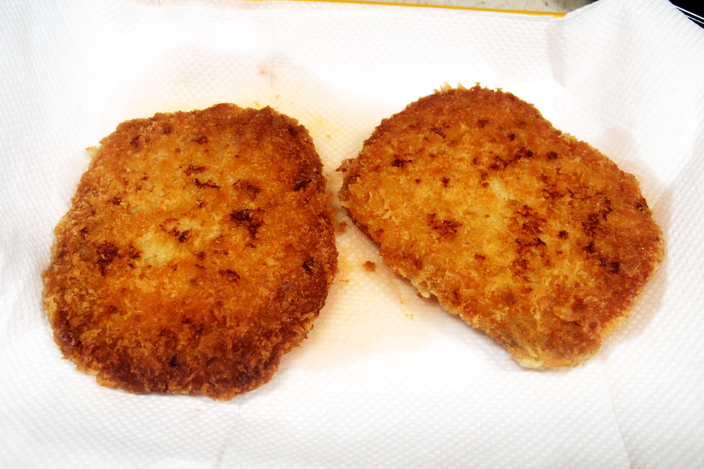

돈까스
재료
: 돼지고기 2장,소금 약간,후추 약간,청주 약간
튀김 옷 - 밀가루 3큰술,계란 1개,빵가루 1/2컵
기타 - 식용유3컵
돼지고기 등심을 두두린 후 소금,후추,청주를 살짝
뿌려 둡니다.
밀가루 옷을 입히고 계란 옷 입혀주세요.
그리고 빵가루를 입혀 줍니다.
175도의 식용유에 4분간 튀깁니다.
Tip. 돈까스 소스는 가까운 마트에 팝니다. 소스는 사서 먹는게 더맛있어요!